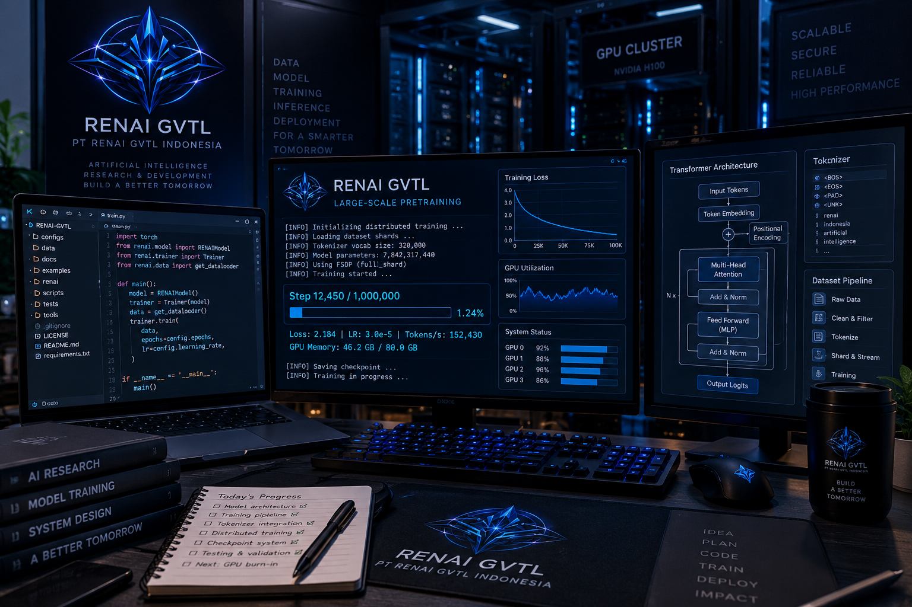

PT RENAI GVTL Indonesia Melanjutkan Pembangunan Infrastruktur Foundation Model AI
MAJALENGKA, 6 September 2026 — PT RENAI GVTL Indonesia melanjutkan aktivitas riset dan pengembangan teknologi RENAI GVTL dengan fokus pada pembangunan serta penguatan sistem foundation model AI.
Aktivitas pengembangan pada hari ini difokuskan pada pembangunan infrastruktur RENAI GVTL Large-Scale Pretraining & Inference sebagai salah satu tahapan penting dalam pembangunan teknologi inti RENAI GVTL.

Pembangunan Infrastruktur Pretraining
Infrastruktur yang dikembangkan mencakup berbagai komponen yang diperlukan untuk mempersiapkan proses pelatihan model berskala besar.
- pengembangan arsitektur model;
- pipeline dataset dan token;
- distributed training;
- checkpointing;
- evaluasi model;
- inference;
- komponen pendukung infrastruktur GPU; dan
- integrasi komponen sistem untuk kebutuhan pengembangan lebih lanjut.
Pembangunan tersebut dilakukan sebagai bagian dari persiapan menuju lingkungan komputasi GPU yang nantinya dapat digunakan untuk menjalankan proses pretraining dalam skala yang lebih besar.
RENAI GVTL v1.0.0
Pada tahap pengembangan ini, sistem telah mencapai RENAI GVTL v1.0.0 — Large-Scale Pretraining & Inference .
Milestone tersebut menandai tersusunnya sejumlah komponen dasar yang diperlukan untuk membangun pipeline training dan inference secara lebih terstruktur.
Namun, pencapaian versi tersebut tidak berarti bahwa foundation model RENAI GVTL telah selesai dilatih.
Pengujian dan Validasi Repository
Selain pembangunan komponen utama, dilakukan pula pengujian dan validasi terhadap repository untuk memastikan fondasi perangkat lunak dapat dikembangkan secara lebih lanjut.
- pemeriksaan kode;
- automated testing;
- model smoke test;
- pengujian komponen arsitektur dasar;
- validasi struktur repository; dan
- persiapan menuju lingkungan komputasi GPU.
Pengujian tersebut menjadi bagian dari proses engineering untuk menemukan kesalahan, keterbatasan, maupun komponen yang masih membutuhkan penyempurnaan sebelum digunakan dalam proses training yang lebih besar.
Status Pengembangan
Pembangunan RENAI GVTL saat ini masih berada pada tahap engineering dan persiapan pretraining .
Sistem yang telah dibuat belum merupakan foundation model yang telah selesai dilatih dan belum dapat dianggap sebagai model produksi.
Engineering → Validation → GPU Preparation → Pretraining → Evaluation → Further Development
Tahap Selanjutnya
Tahap berikutnya akan difokuskan pada audit dan penyempurnaan infrastruktur training.
Beberapa komponen yang menjadi perhatian utama meliputi:
- distributed training;
- checkpointing;
- tokenizer;
- dataset pipeline;
- inference;
- integrasi antar-komponen; dan
- kesiapan infrastruktur komputasi GPU.
Seluruh komponen tersebut perlu dipastikan dapat bekerja secara terintegrasi sebelum digunakan untuk proses pretraining dalam skala yang lebih besar.
Bagian dari The Foundation Era
Aktivitas pembangunan pada 6 September 2026 menjadi bagian dari perjalanan PT RENAI GVTL Indonesia dalam membangun teknologi AI secara bertahap.
Perjalanan tersebut mencakup eksperimen awal, penelitian, pembangunan infrastruktur, pengujian komponen, validasi sistem, hingga persiapan menuju pembangunan foundation model yang dapat dilatih dan dikembangkan secara mandiri.
Perusahaan menyadari bahwa pembangunan teknologi AI berskala besar membutuhkan proses engineering yang panjang. Oleh karena itu, setiap komponen dibangun, diuji, diperiksa, dan diperbaiki secara bertahap.
Catatan Pembangunan
Setiap baris kode, setiap pengujian, dan setiap kegagalan yang ditemukan selama proses pembangunan menjadi bagian dari perjalanan RENAI GVTL.
Tidak semuanya langsung berhasil. Namun, setiap kesalahan yang ditemukan memberikan informasi baru mengenai apa yang harus diperbaiki, sementara setiap komponen yang berhasil dibangun membawa proyek satu langkah lebih dekat menuju sistem teknologi AI yang benar-benar dapat berjalan.
Tentang PT RENAI GVTL Indonesia
PT RENAI GVTL Indonesia merupakan perusahaan teknologi yang berfokus pada penelitian dan pengembangan kecerdasan buatan, infrastruktur AI, serta teknologi pendukung ekosistem digital.
Berbasis di Majalengka, Jawa Barat, Indonesia, perusahaan saat ini berada dalam fase The Foundation Era dengan fokus pada pembangunan fondasi teknologi, penelitian, pengembangan model, infrastruktur komputasi, serta arsitektur sistem yang dapat dikembangkan menuju skala yang lebih besar.
Pernyataan Status Teknologi
RENAI GVTL v1.0.0 is currently under active engineering and pretraining preparation.
Versi, arsitektur, komponen, spesifikasi teknis, dan roadmap pengembangan dapat mengalami perubahan selama proses Research & Development berlangsung.
Publikasi ini merupakan dokumentasi perkembangan engineering dan penelitian PT RENAI GVTL Indonesia, bukan pernyataan bahwa foundation model telah selesai dilatih atau telah tersedia secara komersial.